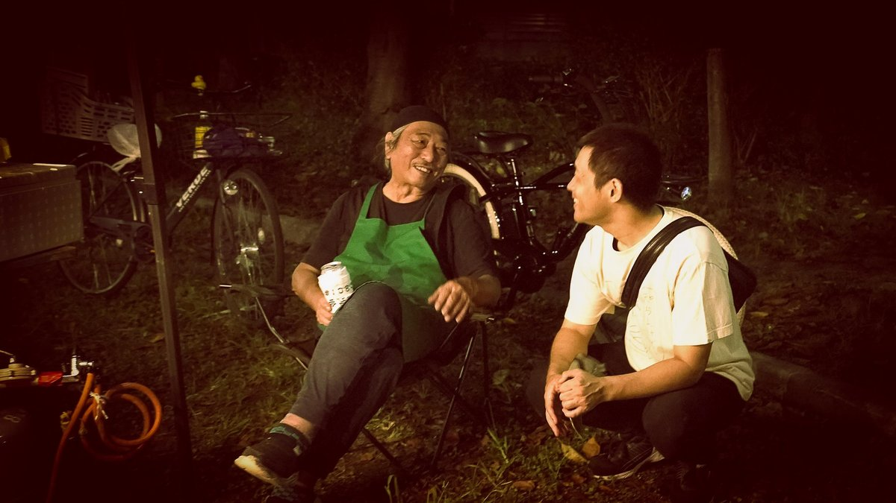
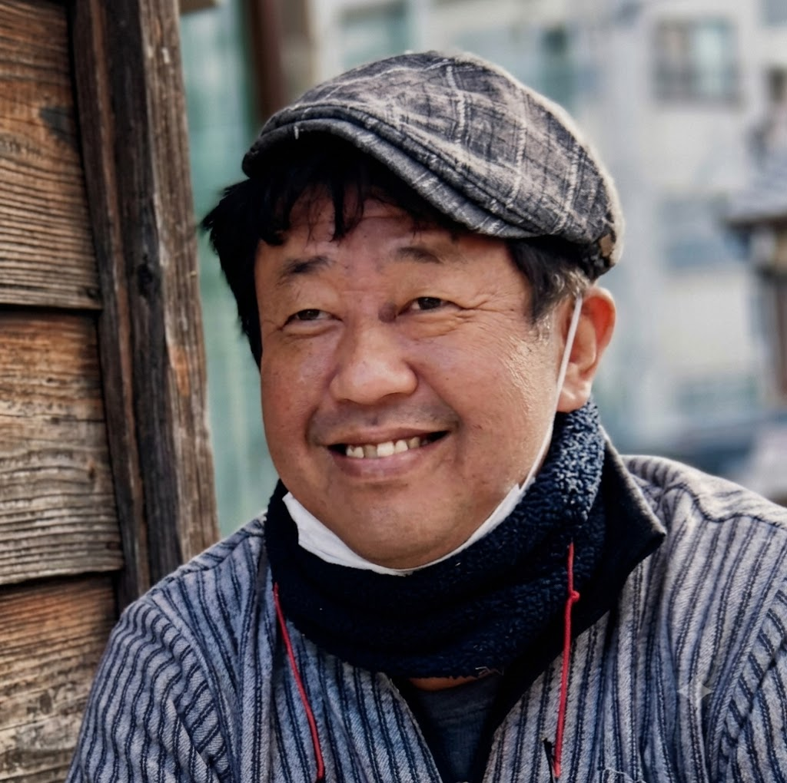

NEWS
STORIES
下町に残してきた物語。


RECORDER

記録者
K.E
下町きろくの動画屋 主催
K.E地域動画研究所 所長
弥栄神社 公式カメラマン
生野区まちづくりセンターに勤め、地域団体の理事も務めながら、街の出来事や人の姿を記録してきました。2021年から「K.E地域動画研究所」として、地域の「今」を映像と写真に残しています。
動画や写真を撮ることは目的ではなく、記録するための手段です。
記録者について →CONTACT
フォームが使えない場合は、メールでもお気軽にどうぞ。
ke@shitamachi-kiroku.comこれまでの記録は、Instagramで公開しています。
Instagram を見る →